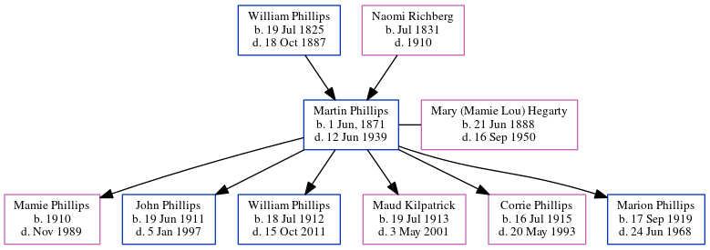

Martin Eugene Phillips 1871 - 1939
[ Home ] | [ Calendar ] | [ Surnames Index ] | [ Census Index ] | [ Family History ]The child of William Phillips (a virginia phillips said that he was a carpenter and contractor. he built grady hospital in atlanta. he also worked on the masonic temple in atlanta. the 1850 census confirms he was a carpenter) and Naomi Richberg, Martin Phillips, the great-grandfather of Michele Copp (née Phillips), was born in South Carolina, USA on Jun 1, 18711,2,3,4,5,6,7 and married Mary (Mamie Lou) Hegarty (with whom he had 6 children: Mamie, John A, William Hiram, Maud, Corrie Lorena and Marion Eugene) in Fulton, Georgia, USA on Jul 28, 190911.
During his life, he was living in Sumter, Sumter, South Carolina in 18701 and in 18802; in Atlanta Ward 3, Fulton, Georgia in 19003, in 19104 (the same place as his mother had been living in 1900) and in 19205; in Atlanta, Fulton, Georgia in 19306; and in Atlanta, Georgia, USA in 193812.
He died on Jun 12, 1939 in Atlanta, Fulton County, Georgia7,8,9,10 and was buried there after Jun 12, 193910.
Parents
- William Hiram was born on Jul 19, 1825
- Naomi C was born in Jul 1831
Children
- Mamie was born in 1910
- John A was born on Jun 19, 1911
- William Hiram was born on Jul 18, 1912
- Maud was born on Jul 19, 1913
- Corrie Lorena was born on Jul 16, 1915
- Marion Eugene was born on Sep 17, 1919
Citations
- 1870 United States Federal Census Online publication - Provo, UT, USA: The Generations Network, Inc., 2003.Original data - 1870. United States. Ninth Census of the United States, 1870. Washington, D.C. National Archives and Records Administration. M593, RG29, 1,761 rolls. Minnesota. Minnes (Residence Post Office: Sumter)
- 1880 United States Federal Census Online publication - Provo, UT, USA: The Generations Network, Inc., 2005. 1880 U.S. Census Index provided by The Church of Jesus Christ of Latter-day Saints © Copyright 1999 Intellectual Reserve, Inc. All rights reserved. All use is subject to the limite
- 1900 United States Federal Census Online publication - Provo, UT, USA: MyFamily.com, Inc., 2004.Original data - United States of America, Bureau of the Census. Twelfth Census of the United States, 1900. Washington, D.C.: National Archives and Records Administration, 1900. T623, 1854 rolls.
- 1910 United States Federal Census Online publication - Provo, UT, USA: The Generations Network, Inc., 2006. For details on the contents of the film numbers, visit the following NARA web page: NARA.Original data - United States of America, Bureau of the Census. Thirteenth Census of the Unit
- 1920 United States Federal Census Online publication - Provo, UT, USA: MyFamily.com, Inc., 2005. For details on the contents of the film numbers, visit the following NARA web page: NARA. Note: Enumeration Districts 819-839 on roll 323 (Chicago City.Original data - United States of America
- 1930 United States Federal Census Online publication - Provo, UT, USA: MyFamily.com, Inc., 2002.Original data - United States of America, Bureau of the Census. Fifteenth Census of the United States, 1930. Washington, D.C.: National Archives and Records Administration, 1930. T626, 2,667 rol
- Georgia, Deaths Index, 1914-1940 Ancestry.com Operations, Inc.
- Newspapers.com Obituary Index, 1800s-current Ancestry.com Operations Inc
- OneWorldTree Online publication - Provo, UT, USA: MyFamily.com, Inc.
- U.S., Find a Grave Index, 1600s-Current Ancestry.com Operations, Inc. (Find a Grave. Find a Grave. www.findagrave.com.)
- Georgia, Marriage Records From Select Counties, 1828-1978 Ancestry.com Operations, Inc.
- U.S., City Directories, 1822-1995 Ancestry.com Operations, Inc. (Original sources vary according to directory. The title of the specific directory being viewed is listed at the top of the image viewer page. Check the directory title page image for full title and publication information.)
Family Tree
Generated by ged2site. Last updated on Jun 6, 2024